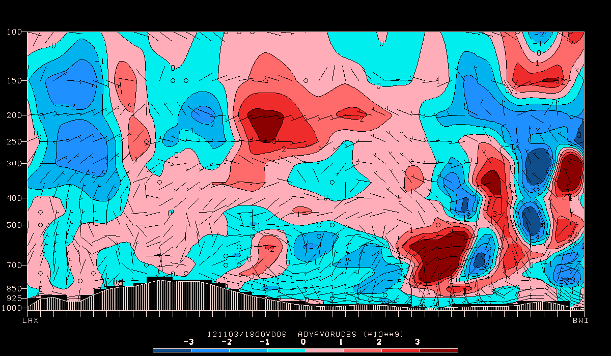

GEMPAK supports the following known vertical coordinates:
NONE - Surface Data
PRES - Pressure
HGHT - Height
THTA - Potential Temperature
SGMA - Sigma
Other vertical coordinates that GEMPAK doesn't know about can be handled as long as they are 4 letter representations, such as ETAL.
sncross draws cross sections using upper-air sounding data. The cross-section line, CXSTNS, must be specified as a list of stations separated with semicolons.
Alternatively, a single station may be entered in CXSTNS and a list of times in DATTIM. In this case, a time section will be drawn.
The plot background consists of a pressure axis, a horizontal axis with the station names, a filled region indicating the part of the plot below the earth surface, and vertical lines at each station.
The horizontal axis represents a straight line between the
first and last stations. The positions of intervening stations
are proportional to the perpendicular projections of the actual
positions onto the section line. All of these calculations
are done in lat/lon coordinates. If the plot is a time section,
the times will be displayed on the x axis with the earliest
time at the left. If the first character in TAXIS is an R, the
earliest time will appear on the right.
The vertical coordinate may be specified as LIN, LOG, or STUVE;
SKEWT is not valid in this program. The bottom and top limits
for the y axis are specified in YAXIS, but the axis labeling
specifications are ignored.
CXSTNS Cross-section station line SNPARM Sounding parameter list SNFILE Sounding data file DATTIM Date/time VCOORD Vertical coordinate type PTYPE Plot type/h:w ratio/margins YAXIS Ystrt/ystop/yinc/lbl;gln;tck TAXIS Time1-time2-tinc;lbl;gln;tck LINE Color/type/width/label/smth/fltr/scflg BORDER Background color/type/width CINT Contour interval/min/max WIND Wind symbol/siz/wdth/typ/hdsz TITLE Title color/line/title PANEL Panel loc/color/dash/width/regn DEVICE Device|name|x size;y size|color type CLEAR Clear screen flag FILTER Filter data factor TEXT Size/fnt/wdth/brdr/N-rot/just/hw flg CURVE Curve fit type CLRBAR Color/ornt/anch/x;y/ln;wd/freq|text_info CONTUR Subbox/smooth FINT Fill interval/min/max FLINE Fill colors/fill types CTYPE Contour type: C/F
Draw isentropes in color 3 for the last time in the data set. Plot the background in color 1. Use a logarithmic scale for the y axis and a 5 degree interval for the isentropes. Draw wind barbs in color number 6 with line width 2.
CXSTNS = epz;abq;gjt;riw
SNPARM = thta
SNFILE = uair
DATTIM = 0000
VCOORD = pres
PTYPE = log
YAXIS =
TAXIS =
LINE = 3
BORDER = 1
CINT = 5
WIND = bm6//2
TITLE = 1
PANEL = 0
DEVICE = xw
CLEAR = y
FILTER = .8
TEXT = 1
CURVE = 2
CLRBAR =
CONTUR = 0
FINT = 0
FLINE = 10-20
CTYPE = C
GEMPAK-SNCROSS>r
Draw filled contours of relative humidity for the same cross section. Fill in contours greater than 50%. Draw a horizontal color bar at the bottom of the plot. Draw the cross section from 1050 mb to 300 mb.
CXSTNS = epz;abq;gjt;riw
SNPARM = relh
SNFILE = uair
DATTIM = 0000
VCOORD = pres
PTYPE = log/.5
YAXIS = 1050/300
TAXIS =
LINE = 3
BORDER = 1
CINT = 5
WIND = bm6//2
TITLE = 1
PANEL = 0
DEVICE = xw
CLEAR = y
FILTER = .8
TEXT = 1
CURVE = 2
CLRBAR = 1/h
CONTUR = 0
FINT = 50;60;70;80
FLINE = 0;21;22;23;24
CTYPE = f
GEMPAK-SNCROSS>r

gdcross draws a vertical cross section between two points
in a grid field. The cross-section path is a line segment
on the grid projection plane joining the two points. Gridded
data are interpolated to the cross-section plane at intervals
corresponding to approximately one grid increment.
The vertical coordinate, set in GVCORD, can be PRES, THTA, HGHT,
or SGMA. The data must be stored in that vertical coordinate in
the grid file. No automatic vertical interpolation is included.
Plot temperature in Kelvin on a log-P chart along the cross section from LAX to BWI. Plot the filled contours using colors from 13 to 30. Plot wind barbs for the wind. Plot a horizontal color bar centered under the cross section.
CXSTNS = lax>bwi
GDATTIM = f06
GVCORD = pres
GFUNC = tmpk
GVECT = wnd
GDFILE = gfs
WIND = bm32
REFVEC = 10
PTYPE = log
YAXIS =
IJSKIP = 0
CINT =
SCALE =
LINE = 32/1/3
BORDER = 1
TITLE = 1
CLEAR = yes
DEVICE = xw
TEXT = 1
PANEL = 0
CLRBAR = 1/h/cc/.5;.03/.6;.01
CONTUR = 3
FINT = 5
FLINE = 13-30
CTYPE = f
GEMPAK-GDCROSS>r

Using the same cross-section and grid file as before, plot a log pressure cross section of the vorticity advection, scaled by 10**9, colored by positive and negative values as shades of red and blue. Also, plot the ageostrophic circulation using arrows. Use a height-to-width plot ratio of 0.5.
CXSTNS = lax>bwi
GDATTIM = f06
GVCORD = pres
GFUNC = adv(avor(wnd),wnd)
GVECT = circ(age;omeg)
GDFILE = gfs
WIND = bm32
REFVEC = 5;.05;.2
PTYPE = log/0.5
YAXIS =
IJSKIP = 0
CINT = 1/-3/3
SCALE = 9
LINE = 32
BORDER = 1
TITLE = 1/-2
CLEAR = yes
DEVICE = xw
TEXT = 1
PANEL = 0
CLRBAR = 1/h/lc/.5;.01;.5;.01
CONTUR = 3
FINT = 1/-3/3
FLINE = 24;25;26;27;11;12;13;14
CTYPE = c/f
GEMPAK-GDCROSS>r

gdprof draws vertical profiles at a point. Data from each
level in the grid file are interpolated to the point.
GPOINT specifies the location for the profile. It may be
entered as a latitude and longitude separated with a semicolon,
as a station character identifier or station number, or as a
set of x and y grid points separated with a semicolon and
preceded with an @. The profile location may also be selected
graphically with the CURSOR command.
GDPROF draws upper-air profiles using gridded data.
Run GPCOLOR first to set the background color to white:
COLORS = 101=255:255:255
DEVICE = xw
GEMPAK-GPCOLOR>
Next run GDPROF for the station iad (Washington DC)
GPOINT = iad
GDATTIM = last
GVCORD = pres
GFUNC = tmpc
GVECT = wnd
GDFILE = gfs
LINE = 2//3
MARKER =
BORDER = 32
PTYPE = skewt
SCALE = 0
XAXIS = -40/40/10
YAXIS = 1000/100/100/;1
WIND = bm32
REFVEC = 10
WINPOS = 1
FILTER = no
TITLE = 32/3/ GFS ^ ~ TMPC DWPC #
PANEL = 0
CLEAR = yes
TEXT = 1
DEVICE = xw
OUTPUT =
THTALN = 2/2
THTELN = 23/2
MIXRLN = 19/10
GEMPAK-GDPROF>r
Now re-run to overlay dewpoint temperature using CLEAR = n on the same graphics device:
GFUNC = dwpc
LINE = 3//3
CLEAR = n
GEMPAK-GDPROF>r

Make note that because GDCROSS uses GFUNC (and not GDPFUN) we can not plot both temperature and dewpoint at the same time, making use of CLEAR = n overlaying.
For SNPROF, we can plot both profiles simulataneously.
Draw a Skew-T, Log-P for the same station (iad) using SNPROF. Again, start with GPCOLOR to set the background to white:
COLORS = 101=255:255:255
DEVICE = xw
GEMPAK-GPCOLOR>
Now run SNPROF with sounding parameters tmpc;dwpc matched by line style 2;3//2:
SNFILE = uair
DATTIM = 1200
AREA = @iad
SNPARM = tmpc;dwpc
LINE = 2;3//2
PTYPE = skewt
VCOORD = pres
STNDEX =
STNCOL =
WIND = bm32
WINPOS = 1
MARKER =
BORDER = 32
TITLE = 32/3/ IAD SKEW-T/LOG-P 1200 UTC
DEVICE = xw
YAXIS = 1000/100/100/;1
XAXIS = -40/40/10
FILTER = no
CLEAR = n
PANEL = 0
TEXT = 1
THTALN = 2/2
THTELN = 23/2
MIXRLN = 19/10
GEMPAK-SNPROF>r